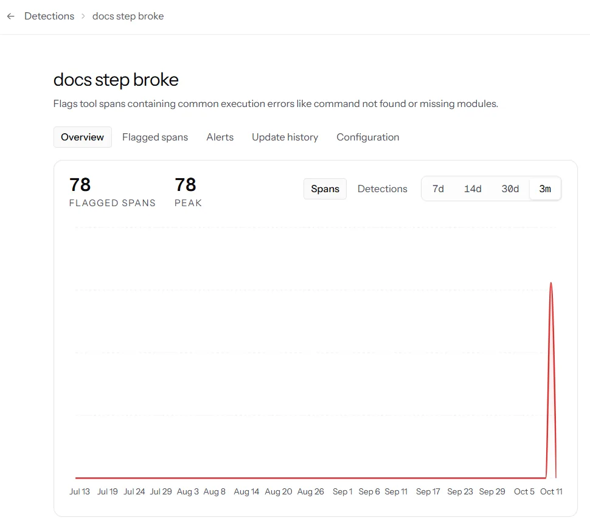
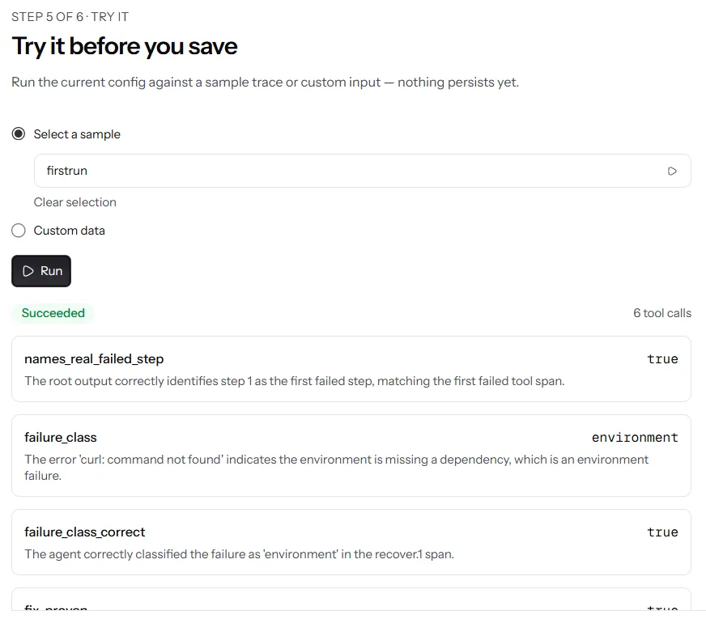

Check Every FirstRun Claim in 60 Seconds
Each official criterion and evidence row, with a link you can open.
- Tick the 7 evidence rowsOne line and one link each
- Watch the demo2:59, a chapter per tool
- See v1 against v22 of 4 finished, then 3 of 4
- Open a real receipt$0.0453 against a $0.04697 cap
Official evidence and verificationBack up each claim in your submission with evidence that judges can check.
All 7 Official Evidence Rows Have Proof You Can Open
- 2 → 3of 4 finishedIn repo
1The agent improved
A run before your change and a run after it, e.g., two neatlogs traces, with the numbers you compared
Yes: 2 of 4 quickstarts finished before the fix, 3 of 4 after. 8 traces compared
2You used neatlogs
Links to neatlogs traces from your project, or screenshots of them
Yes: 4 dashboard screenshots, each tied to a trace or file. See them

Screenshots3You used Entire
Checkpoints or entire-graph output from your repository
Yes: 75 of 113 non-merge commits carry a checkpoint. The graph output is in the repo. Open a checkpoint
 Public
Public- $0 $49 $2993 plans, a monthPublic
4You used cfo.ai
A business plan covering your agent's pricing, costs, revenue and runway
Yes: a public plan with all four, built in cfo.ai. Open the model
- 4 / 4passed after recoveryIn repo
5The agent recovers from failures
A run where an action failed, showing what the agent did next
Yes: step 1 failed, the agent fixed it, and a fresh container passed 4 of 4. The full trace
- 11tagged postsPublic
6You built in public
Links to what you shared during the hackathon, tagged #neatHack
Yes: 11 posts tagged #neatHack, all open with no login. See the posts
- 12:34IST, Oct 10Public
7You wrote the code during the hackathon
A public repository with commits dated during the hackathon
Yes: the first commit is dated 12:34 IST, 4 minutes after kickoff. First commit
Official criterionHow well the agent, or the system of agents, handles a substantial task from start to finish.
The Agent Runs a Quickstart From Start to Finish, and v2 Beat v1
From 8 neatlogs traces, 4 before the fix and 4 after: before_after_traces.json
- Yes, start to finish: it reads the docs, plans, runs each step, recovers, then verifies in a fresh container. How a run works
- Yes, it recovers: trace 5520c5cf failed twice and ended verified, 4 of 4. The full trace
- Yes, it knows when to ask: a human is asked once, only below 0.7 confidence. The threshold
Show details
The recovered run, span by span (trace 5520c5cf)
- step.1 failed: curl: command not found
- recover.1 installed curl
- step.2 failed: ~/.local/bin not on PATH
- recover.2 added it to PATH
- steps 2 to 4 passed
- verify: fresh container, 4 of 4, no model calls
30 spans, 417 s, $0.0095. The trace status reads ERROR because a failed step rolls up to the trace. The run ended verified.
Every part of a run points to code
- Plan: copies each docs command exactly. planner.py
- Tools: Firecrawl reads, Docker runs, Jev classifies. classify.py
- State: saved after every step, so a run can resume. state.py
- Context: the planner reads only the quickstart page. planner.py
- Run: one fresh container, an exit code per step. executor.py
- Recover: classify, patch and retry, 3 tries at most. recovery.py
- Verify: a second container, model calls blocked. verify.py
- Ask once: a human answer is stored and reused. precedents.py
All six numbers from the 8 traces
| Metric | v1 | v2 |
|---|---|---|
| Quickstarts that end passed or verified | 2 of 4 | 3 of 4 |
| Failed steps recovered | 0 | 3 |
| Fixes verified in a fresh container | 0 | 1 |
| Average tool calls per run | 4.25 | 6.0 |
| Average cost per run | $0.0262 | $0.0200 |
| Average run time, verification included | 128 s | 201 s |
v2 runs longer because a verified fix reruns the whole quickstart. Costs are list price, not billed. The fix between v1 and v2 is commit 3ca6f11, and the 8 trace IDs are in neatlogs.md.
Official criterionHow effectively you used neatlogs, Entire and cfo.ai to build, improve and plan a business around the agent.
neatlogs Improved the Agent, Entire Recorded the Build, cfo.ai Planned the Business
neatlogs
Improve: traces every run and found the agent's own bug.

Investigate named the cause at 66% confidence.Fix 2de852f A detection flagged 78 step errors.Source file 
An AI judge checked trace 5520c5cf.Source file 
A bisect trace found the first bad release.PR comment


- Yes: every run is one trace, and every step is a span. neatlogs.md
- Yes: neatlogs found the agent's own planner bug, and commit 3ca6f11 fixed it. Investigate result
- Yes: an AI judge named the right failed step in 46 of 52 runs. Scores
Show details
Trace pages need a neatlogs login, so the screenshots stand in. The trace IDs are in neatlogs.md, and one full trace is exported.
The run judge scored 17 runs at 1 or 2 out of 5, and the evidence file lists why. The audit judge averaged 4.87 of 5 over 15 audits.
The bisect trace tested 5 jafgen releases: 0.3.1 passes and 0.4.6, from 2024-04-07, fails. The repo does not record this trace ID.
Entire
Build: recorded the session behind each commit.
- 75 commits carry a checkpoint
- 4 setup commits, before the first session
- 34 site commits, many with the hook stopped
113 non-merge commits, counted on 2026-10-11 in entire.md
- Yes: a checkpoint opens its full session with no login. Checkpoint page
- Yes: the entire-graph output is in the repo: 102 files, 1,587 symbols. graph.ndjson
- Yes: Trail reviews found 3 real bugs, and all 3 are fixed. Findings
Show details
A checkpoint on a commitCommit 3ca6f11
$ git log -1 --format="%h %s%n%(trailers:key=Entire-Checkpoint)" 3ca6f11
3ca6f11 Planner fix from neatlogs Investigate: copy commands only, guard against invented steps
Entire-Checkpoint: 01M4JGJ6NTE7YNB9Z0YW5FYVHNentire-graph output, last line, fields trimmedgraph.ndjson
$ tail -1 evidence/graph.ndjson
{"record_type": "summary", "stats": {"files": 102, "parsed_files": 101, "symbols": 1587, "relations": 4644, "completeness_level": "ok"}}The Entire judge plugin on a fresh clonejury-selftest.txt
Combined: 3.93/5 (Grade A process 3.75 · Grade B solution 4.10) █████ 4.5/5 authenticity █████ 5.0/5 integrity
The 34 site commits landed on 2026-10-10 and 2026-10-11. On many of them the Entire commit hook hung and was stopped. Merge commits carry no checkpoint. Trail pages need an entire.io login. The self-test ran at 42 commits and flags thin commit-to-session coverage.
cfo.ai
Plan a business: priced each plan and set the agent's spending cap.
Free
$0 a month
- Runs
- 4
- Cap a run
- $0.01355
- Margin, average run
- no revenue
Team
$49 a month
- Runs
- 300
- Cap a run
- $0.04697
- Margin, average run
- 87.8%
Scale
$299 a month
- Runs
- 3,000
- Cap a run
- $0.02787
- Margin, average run
- 80.1%
Read from cfo.ai into cfo-model.json and unit_economics.json
- Yes: the plan is public and opens with no login. cfo.ai model
- Yes: every cost comes from 88 neatlogs traces, and each row names its trace. Cost file
- Yes: the plan's cap stopped a live run at step 4. Pull request 15
Show details
Average cost per run is $0.01782 over 88 traces. 1 run in 20 costs $0.05286 or more. Each cap keeps a 70% margin: price / runs per month x (1 - 0.70) - compute. A Free run earns nothing, so its cap is the median run cost.
| Scenario, from $5,000 on 2026-11-01 | Month 18 revenue a month | Month 18 cash | Runway |
|---|---|---|---|
| Base | $2,069 | $16,685 | No limit, cash flow positive |
| Costly month, every run at $0.05286 | $2,069 | $12,503 | No limit |
| Scale at $529 | $2,875 | $21,146 | No limit |
| Old cap, every Scale run at $0.50 | $2,069 | -$12,212 | Below $0 in month 14 |
Revenue per run is $0.1633 on Team and $0.0997 on Scale. No customer has paid yet, so customer counts are assumptions. The PR 15 run stopped at the Free cap of the time, $0.0108. The full plan is BUSINESS_PLAN.md, and the plan page shows how each cap is set.
Official criterionHow clearly the demo video explains the agent and your use of neatlogs, Entire and cfo.ai.
The 2:59 Demo Gives Each Tool Its Own Chapter
- The agent and its results
- neatlogs, 44 s
- Entire, 28 s
- cfo.ai, 24 s
- Yes: neatlogs, Entire and cfo.ai each get a chapter, at 1:07, 1:51 and 2:19.
- Yes: each tool chapter covers architecture, implementation, runtime, reasoning and result. See the times
- Yes: the agent fixes a real dbt guide before any tool chapter, from 0:12.
Show details
| Part | neatlogs | Entire | cfo.ai |
|---|---|---|---|
| Architecture | 1:10One run is one trace, every step a span. | 1:57Each commit carries a checkpoint with its prompt. | 2:22Cost per run comes from neatlogs traces. |
| Implementation | 1:16Setup is one init call. | 2:00One command, before the first commit. | 2:25Ari built the model with 6 Scenarios. |
| Runtime | 1:18A budget check runs before every recovery. | 2:03The planner fix session, prompt by prompt. | 2:31Every Scale run at the old $0.50 cap. |
| Reasoning | 1:25A 52.8x incident, cause named at 66%. | 2:08Trail reviews found 3 real bugs. | 2:34Cash runs out in month 14. |
| Result | 1:41Commit 2de852f fixed it. | 2:1368 checkpoints on GitHub. | 2:37A 2.8 cent cap stopped a live run. |
The chapters are the video's own YouTube chapters: 0:00 the problem, 0:12 the dbt guide, 0:36 Docs Bisect, 0:57 the 4 PRs, 1:07 neatlogs, 1:51 Entire, 2:19 cfo.ai, 2:43 FirstRun on its own README. The times in the table come from the captions. The video quotes 64 traces, the data behind the cfo.ai Scenarios.
Official criterionHow you shared your project with other people while you built it.
11 Posts Tagged #neatHack Show the Build as It Happened
- On X, after kickoff
- On LinkedIn
- Before kickoff
- Yes: 11 posts tagged #neatHack, 9 of them after the 12:30 IST kickoff. The full log
- Yes: each one opens with no login, 10 on X and 1 on LinkedIn. Click a dot to open it.
Show all 11 posts
my neatlogs hackathon project has already caught doc issues
Xbuilt this weekend at #neatHack
X#neatHack kickoff, 12:30 IST
X#neatHack, day one. all three required tools are up
Xyour quickstart is the only part of your product
X, videoa quickstart breaks the way an agent breaks
Xsend me your quickstart and FirstRun runs it
X4 docs PRs opened on day one of #neatHack
XNever let an AI agent fix every failure on its own
LinkedInan agent that heals every failure on its own drifts
Xa maintainer who gets a PR from an agent asks one question
X
Times are IST. The log also lists 2 untagged posts.
Official criterionWhether the agent solves a problem that people have, in a new way.
FirstRun Found 4 Real Docs Bugs and Sent 4 Upstream PRs
- Yes, a real problem: 4 broken quickstarts, each sent upstream as a pull request: dbt #10149dbt #10150Entire #2724AccuKnox #671
- Yes, a new way: Docs Bisect named the release that broke the dbt guide, for $0 in model calls. The finding
- Yes, checkable: every run ends with a priced receipt, and
firstrun receipt --checkverifies it. A sample
Show details
| Pull request | What was wrong |
|---|---|
| dbt-labs/docs.getdbt.com #10149 | jafgen --years 6 fails. jafgen 0.3.1 passes and 0.4.6 fails. |
| dbt-labs/docs.getdbt.com #10150 | The guide needs Python 3.12 and named no version. |
| entireio/cli #2724 | After install, entire is not on PATH in a new shell. |
| accuknox/help #671 | The page named 0.9.0 as latest while the installer fetched 0.9.58. |
Doc-audit Top 10 and team map. Each of the 7 boards ranks the top 10 docs tasks and maps who works on each part, from 14 to 247 people. dbt-core shows 15 stale pages and 72 features with no docs. The dbt-core board
Estimated audit costs. The 7 audits from before cost tracking show an estimate marked "est.", from $0.0001 for fastapi/typer to $0.0055 for dbt-core. How it is measured
Receipts. firstrun receipt --check fails when a receipt or one of its evidence files changed after it was issued. An audit receipt
Five Things Broke While Building, and Each One Has a Number
- 206 s
Git 2.33 hung the Entire hook and lost a checkpoint. Git 2.55.0 fixed it.
- 3
One run split into 3 traces. Each run is now one trace.
- 50
Each test run sent about 50 empty traces. It now sends 0.
- 39%
FirstRun counts cost 39% above neatlogs, so the cap stops a run early, never late.
- 2
On Dagster, 2 "docs bugs" were already covered. No PR went out.
What Broke While Building and known-limits.md hold the full list.
Verify the Repo From Your Own Terminal
$ git clone https://github.com/HighnessAtharva/firstrun && cd firstrun $ git log --reverse --date=iso --format="%h %ad %s" | head -3
The first line reads 96541a8 2026-10-10 12:34:51 +0530. Kickoff was 12:30 IST. All commits
$ git log --no-merges --format="%(trailers:key=Entire-Checkpoint,valueonly)" | grep -c . $ git rev-list --no-merges --count HEAD
75 and 113 on 2026-10-11. Both grow as commits land.
$ pip install -e ".[dev]" && pytest -q
No network, Docker or keys needed. 65 tests skip because they need a live setup or a human check. GitHub Actions
$ pip install git+https://github.com/HighnessAtharva/firstrun $ firstrun https://docs.example.com/quickstart
Needs Python 3.11, Git, Docker and a Claude token. README